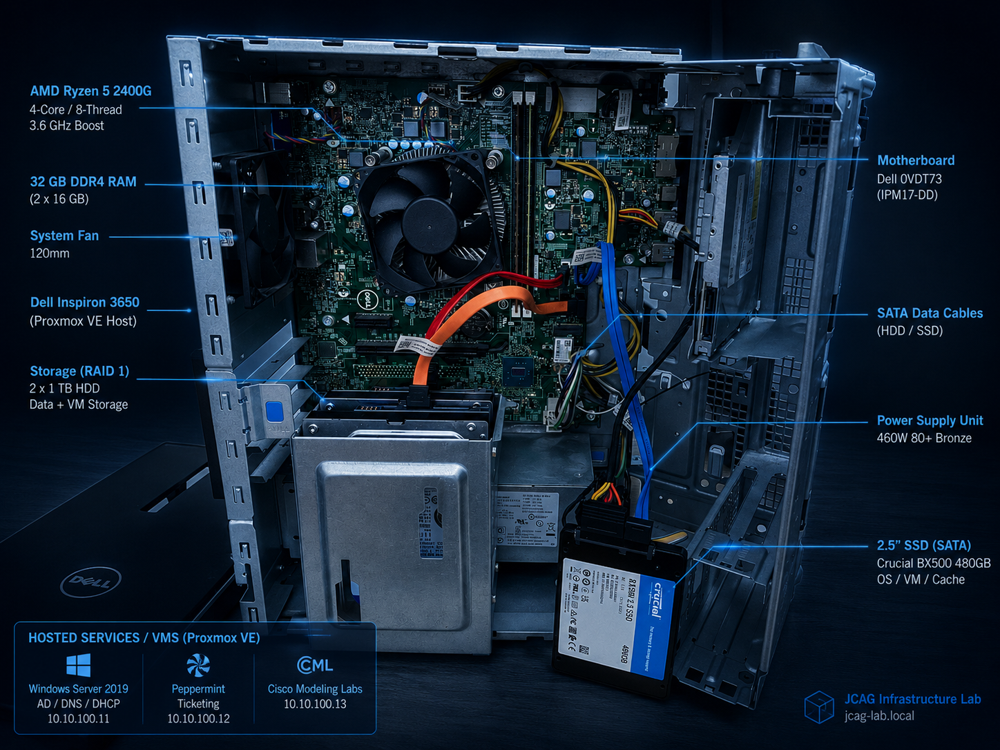
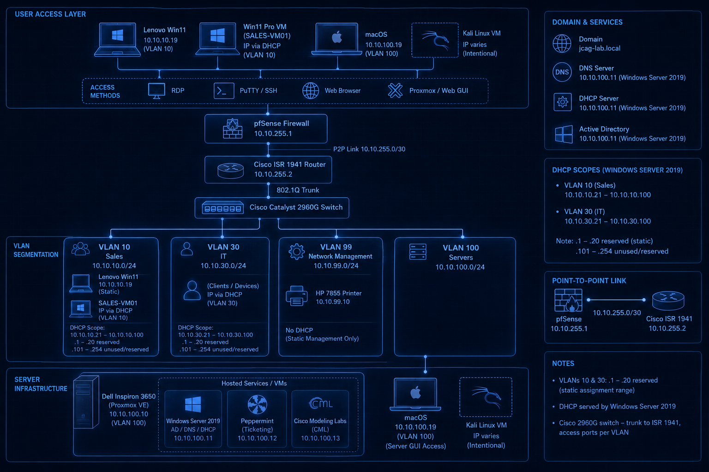
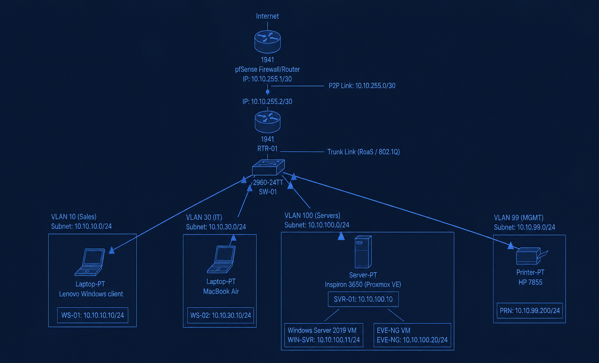
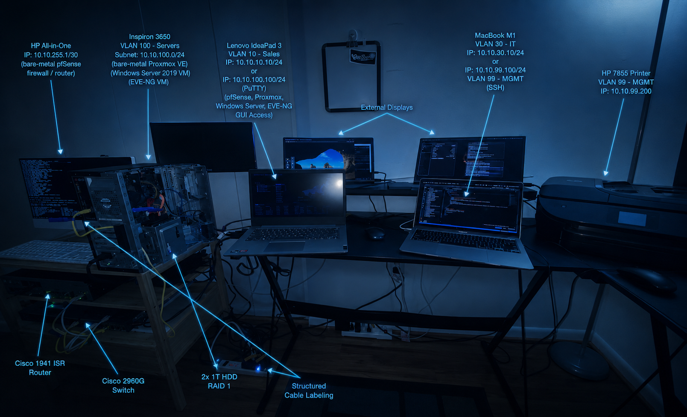

Enterprise Services & System Administration
Expansion of enterprise infrastructure into enterprise services, systems administration, virtualization, endpoint management, and operational support functions integrated within a centralized network environment.
Server Upgrade & Network Inrastructure Blue Print

Upgraded Inspiron 3650
Upgraded Inspiron 3650 desktop to host Proxmox VE.
- Storage upgrade: 1TB HDD to 500GB SSD & 2X 1TB HDD
- RAM upgrade: from 8GB to 16GB
- Phase 1 servers on Proxmox: Windows Server 2019, EVE-NG, CML

Network Infrastructure Blue Print
Displays the infrastructure device composition, IP address scheme, and network flow.
- Inter-VLAN routing
- Management network isolation
- Server network segmentation
- Firewall-controlled traffic flow
Phase 2 Overview
Virtualization, enterprise services, & system administration.
Virtualization
- Proxmox VE
- VirtualBox
- Container Services
Enterprise Services
- Windows Server 2019
- AD DS / DNS / DHCP / File Sharing
Ticketing Services
- Peppermint
- Dockers Container
CCNP Lab Platform
- CML
- Ubuntu Server LTS
Enterprise

Inspiron 3650
Upgrades: Storage 500GB SSD & 2X 1TB HDD, RAM 16GB (max spec). Proxmox VE. Proxmox
- Inter-VLAN routing
- Management network isolation
- Server network segmentation
- Firewall-controlled traffic flow

Physical Architecture
Physical device deployment including routing infrastructure, switching layers, virtualization hosts, and cable management.
- Rack & desk deployment layout
- Switch-to-router uplinks
- Firewall transit connectivity
- Virtualization host integration
Deployment Flow
Hardware Upgrade → Proxmox → Services: AD DS, CML, Peppermint → Endpoint Integration
Repository
Virtualization Docs
Proxmox and VM deployment records.
Enterprise Services Docs
AD, DNS, DHCP configurations.